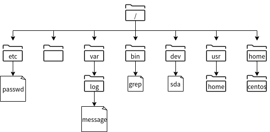

第三章 文件的操作与使用¶
3.1 了解Linux目录结构¶
树状结构与各目录的作用¶
FHS（Filesystem Hierarchy Sttandard）是规定目录结构标准的规范。在多数Linux发行版中，都以FHS为基础进行目录和文件的配置。
在FHS中，除了定义目录名称之外，还规定了各目录的作用、包含的文件的种类、文件的配置等。因此，通过理解FHS中提倡的规范目录结构，可以掌握Linux中常用的必要的文件所在位置，新建的配置文件的放置位置。
此外，在FHS中，可以通过“可共享”(Shareable)、“不可共享”(Unshareable)、“静态”(Static)或“可变更”（Variable）来分配要放置文件的目录。
分类 |
说明 |
|---|---|
可共享 |
可通过网络共享的文件，例如应用程序、库等 |
不可共享 |
无法通过网络共享的文件，例如锁定文件等 |
静态 |
除了系统管理员的操作，其他操作不能变更的文件。例如二进制命令、库、文档等 |
可变更 |
系统运行中可变更的文件，例如日志文件、登录用户的信息文件、锁定文件等 |
可共享 |
不可共享 |
|
|---|---|---|
静态 |
/usr /opt |
/etc /boot |
可变更 |
/var/mail /var/spool/news |
/var/run /var/lock |
例如，/var作为系统运行中的文件可被更新、追加、删除的目录。在/var/mail目录下，每个用户都相对应有一个文件。另外，/var/lock 是为了在文件的读写等过程中进行排他控制而指定使用的目录。
FHS是以根(/)为起点的单一的树状结构目录，“/”下配置了与目录相对应的目录层级。
主要的目录和租用如下表所示：
目录 |
作用 |
|---|---|
/ |
相当于文件系统定点的目录 |
/bin |
一般用户、管理者使用的命令（可执行二进制文件）所在目录 |
/dev |
放置设备配置文件的目录，此目录下的文件由系统引导时检查连接的设备并自动创建 |
/etc |
用于管理系统的配置文件和各种软件的配置文件的目录 |
/lib |
为/bin和/sbin目录下的命令和程序提供可利用的库的目录 |
/lib/modules |
存放内核模块配置的目录 |
/media |
数据目录，如CD/DVD |
/opt |
在Linux安装完成后，此目录可以部署额外安装的软件包（软件） |
/proc |
该目录存储运行内核和进程保留的信息，由于是虚拟文件系统，所以文件并不存在 |
/root |
root用户的主目录 |
/sbin |
该目录主要存放由系统管理员使用的命令，但根据额外选项一般用户也可以使用 |
/tmp |
配置应用程序或用户使用的临时文件目录 |
/var |
该目录存放在系统运行中各种程序配置发生变化的文件 |
/var/log |
该目录存放系统或程序的日志文件 |
/boot |
该目录存放系统启动时需要的引导加载程序相关的文件和内核镜像 |
/usr |
该目录存放用户共享的数据，例如应用程序、库、命令等 |
/usr/bin |
该目录存放一般用户、管理者使用的命令 |
/usr/lib |
该目录存放各种命令使用的库 |
/usr/sbin |
该目录存放仅系统管理员可使用的命令 |
/home |
一般用户的主目录 |
要查看文件系统中的目录详细信息，请运行“man hier”命令。有关man命令的信息，请参考下面的内容：
# man hier
HIER(7) Linux Programmer's Manual HIER(7)
NAME
hier - description of the filesystem hierarchy
DESCRIPTION
A typical Linux system has, among others, the following directories:
/ This is the root directory. This is where the whole tree starts.
/bin This directory contains executable programs which are needed in single user mode
and to bring the system up or repair it.
/boot Contains static files for the boot loader. This directory holds only the files
which are needed during the boot process. The map installer and configuration
files should go to /sbin and /etc. The operating system kernel (initrd for exam‐
ple) must be located in either / or /boot.
/dev Special or device files, which refer to physical devices. See mknod(1).
/etc Contains configuration files which are local to the machine. Some larger software
packages, like X11, can have their own subdirectories below /etc. Site-wide con‐
figuration files may be placed here or in /usr/etc. Nevertheless, programs should
always look for these files in /etc and you may have links for these files to
/usr/etc.
...省略...
当显示文件的保存位置时，目录和其下面的目录之间，通常是使用“/”（斜杠）进行划分。例如在图 3-1-1 中，var目录下的log目录下的messages文件，其保存位置表示为“/var/log/messages”。
另外，将表示这样的文件位置的信息称为路径。
命令提示符¶
登录到Linux的用户将位于目录结构中的当前用户的主目录位置。然后，用户就可以使用命令执行某些操作。您可以在屏幕上的命令提示符中查看您当前所在的路径。例如，以下示例将提示您登录的是CentOS主机：
[用户名@主机名 当前位置的提示符号]
如果你使用root用户登录：
[root@centos ~]#
如果你使用centos用户登录：
[centos@centos ~]$
在“@”符号前是当前用户名，“@”符号后是当前的主机名称，一般主机名称后都会有“~”符号表示当前路径位于当前用户的主目录。
主目录是分配给各用户的作业空间。虽然用户可以在自己的主目录可以随意的读写文件，但是在其他用户的主目录中，只要没有被其他用户赋予权限，就不能进行读写文件。但是，由于root用户具有管理员权限，只有它可以在所有用户的主目录进行读写。
如果要执行任何操作，请在显示的命令提示符下输入需要执行的命令。以下是以root用户身份登录到主机“centos”并运行 pwd 命令的执行过程。pwd命令显示用户当前所在的路径。请注意，root用户的提示符为“#”。
[root@centos ~]# pwd ➜ root用户执行
/root ➜ 当前所在目录位置，为/root目录。
下面是普通用户“centos”登录并运行pwd命令的示例。注意，一般用户的提示符为“$”。
[centos@centos ~]$ pwd ➜ centos用户执行
/home/centos ➜ 当前所在目录位置，一般为 /home 目录下加上用户名组成的路径。
注解
在本书中，许多命令执行时都会省略命令提示符的部分内容，仅以“#”或“$”显示。不过这也能表示您使用的是 root 用户或普通用户。
在 linux 上使用的命令可由普通用户执行，即也可以由无管理员权限的用户执行。
root用户具有管理员权限，但普通用户可以根据需要添加权限。本书尽可能让普通用户执行不需要管理员权限的操作。此外，如果您需要管理员权限，则使用root用户执行命令。
请注意，如果要在登录状态下切换到其他用户或管理员（root），请使用su命令。
su [可选选项] [-] [用户名称]
如果省略用户名，则默认为root。如果不再用户名前使用“-”，则只切换用户，并且登录环境所在目录仍为上一个用户所在目录位置且bash环境也不变。使用“-”可切换用户并使用新用户的环境。
可以使用id命令查看当前用户的所在的有效用户ID与有效组ID。在以下示例中，运行时环境保持为用户zhangsan，并切换为用户lisi。
[zhangsan@centos ~]$ id
uid=1000(zhangsan) gid=1000(zhangsan) groups=1000(zhangsan),100(users)
... 省略 ...
[zhangsan@centos ~]$ su - lisi
密码：
上一次登录：Mon Jan 13 17:28:33 CST 2020从 58.246.147.26pts/0 上
[lisi@centos ~]$ id
uid=1001(lisi) gid=1001(lisi) groups=1001(lisi),100(users)
... 省略 ...
[lisi@centos ~]$ pwd
/home/lisi
另外，对于 Ubuntu，普通用户可以通过“sudo su -” 切换root用户。
自定义命令提示符¶
在bash中，shell变量PS1定义为命令提示符，如第二章中所述。PS2还可以定义为辅助提示符。辅助提示符表示命令尚未完成，并且是连续输入命令时。
以下示例使用辅助提示符：键盘输入 ls -la /etc/passwd 后，请在行尾输入“”以转义换行符。然后可以继续输入，PS2的默认值为“>”。
$ ls -la /etc/passwd \
> /etc/shadow
-rw-r--r-- 1 root root 1198 Dec 18 19:14 /etc/passwd
---------- 1 root root 822 Dec 18 19:14 /etc/shadow
此外，以下示例还显示了如何编辑PS1并自定义命令提示符：
$ PS1='\s-\v\$'
-bash-4.2$ PS1='[\u@\h \w]\$'
[centos@centos ~]$
设置bash命令提示符的默认值，其中“s”是shell的名称，“-”是连字符，“v”是版本，“$”是美元符号。
修改后的命令提示符为“-bash-4.2 $”。之后我们再修改命令提示符显示为“[当前用户名@当前主机名 目录]$”，其中相对应的参数的值，“[”是起始方括号，“u”是当前用户名，“h”是当前主机名，“@”是一个at符号，“w”是当前所在的目录，“]”是结束方括号。
最终我们看到的命令提示符为“[centos@centos ~]$”
因为这是在当前运行的bash中设置的，所以退出此用户环境后此配置将会消失。需要在下次启动bash时或注销再登录bash时也能生效，请参考第四章内容，通过在“~/.bashrc”或“~/.bash_profile”中添加来实现。
离线文档¶
在linux上，有多种命令可供用户使用。离线文档可帮助您了解如何使用命令。离线文档可以打印出命令和文件相关的说明。
要查看离线文档，可以使用man命令。
man [选项] [章节编号] 命令名称|文件名称等
选项 |
说明 |
|---|---|
-f |
显示在所有手册中的章节中找到的与指定关键字相匹配的内容 |
-k |
显示包含指定关键字的文档的章节 |
注解
在man命令格式中带有“|”参数表示您必须指定其中一个参数，例如“命令名称”或“文件名称”。
如果手册页太长而无法完整的打印在屏幕上，则man命令在打印一个屏幕后会停止打印。因此，要在滚动屏幕打印，请按下列键：
键盘操作 |
说明 |
|---|---|
space |
显示下一页 |
Enter |
显示下一行 |
b |
显示上一页 |
h |
显示帮助 |
q |
退出man命令 |
/字符串 |
查找字符串（使用“n”键查找下一个） |
另外，由于离线文档中有很多项目，因此可能会分为章节或部分。
部分 |
说明 |
|---|---|
1 |
使用说明 |
2 |
系统调用 |
3 |
程序库 |
4 |
设备文件 |
5 |
文件格式 |
6 |
解决方法 |
7 |
其他 |
8 |
系统管理命令 |
在联机文档中，具有相同名称的文档可能位于不同的章节（部分）中。例如：
$ man passwd ➜ ①
... 省略打印内容 ...
$ man -f passwd ➜ ②
passwd (5) - 密码文件
passwd (1) - 更改用户密码
passwd (1ssl) - compute password hashes
①在运行man命令时，指定要查看passwd命令。在这种情况下，将显示passwd命令的离线文档，因为它是在不添加任何选项的情况下选定的。
②指定了“-f”选项。因此，查找并显示所有包含关键字“passwd”的章节（部分）。请注意，passwd命令位于第一章节，而记录用户账户内容信息的passwd文件位于第五章节。如果要查看第五章节passwd文件的离线文档，请执行以下操作：
$ man 5 passwd
... 省略打印内容 ...
3.2 管理文件和目录¶
在命令行中处理文件和目录¶
在命令行中操作文件系统中的文件和目录时，需要了解如何管理这些文件和目录以及管理文件系统的常用命令。
在 Linux 系统中执行操作时，用户必定在文件系统的某个目录位置中。我们一般将当前所处的目录称为当前目录。下图中“zhangsan”是用户zhangsan的初始目录，下面将其作为的那个前目录进行介绍。

切换目录¶
cd命令用于在文件系统上切换目录。
cd [目录]
目录可以是绝对路径，也可以是相对路径。绝对路径从根目录（/）开始，并以斜杠（/）分隔所需目录的路径。此外，相对路径从当前目录，表示所需目录的路径。你可以使用以下目录符号：
符号 |
说明 |
|---|---|
~ |
初始目录，表示当前执行用户的工作目录。 |
. |
当前目录，表示当前执行用户的所处的目录。 |
.. |
父目录，以当前目录为准，表示上一级目录。 |
在图3-2-1中所示的当前所在路径为用户工作目录“/home/zhangsan”，①②③分别表示切换到不同的目录下。如何使用绝对路径或相对路径切换到相同的路径，参考下表。
编号 |
绝对路径 |
相对路径 |
|---|---|---|
① |
cd /home |
cd .. |
② |
cd /opt |
cd ../../opt |
③ |
cd /home/zhangsan/dir_b |
cd dir_b |
除此之外，如果登陆用户为 zhangsan，无论当前在哪个目录下，使用“cd”，“cd ~”，“cd ~zhangsan” 都将切换到用户工作目录“/home/zhangsan”。但是如果zhangsan用户使用命令“cd ~lisi”，也同样可以切换到用户lisi的工作目录下，但是必须拥有用户lisi工作目录的读写权限才可访问。
显示目录路径¶
pwd命令以绝对路径显示当前用户所处的目录位置。
查看文件和目录信息¶
ls 命令列出文件和目录信息。如果没有指定目录名称，则默认会列出当前目录的内容。
ls [选项] [目录名...]
ls [选项] [文件名...]
选项 |
说明 |
|---|---|
-F |
显示表示文件类型符号：“/”是目录，“*”是可执行文件，“@”是链接符号 |
-a |
显示隐藏文件（文件名以点“.”开头） |
-l |
显示详细信息 |
-d |
显示当前目录的信息，而不是当前目录下的内容 |
注解
由于在使用ls命令时，我们可以指定多个文件或目录，因此上面的命令格式中我们使用“…”来表示多个文件或目录。在之后的内容中也会使用相同的表示方法。
$ cd /usr ➜ 表示移动到目录/usr
$ ls ➜ 表示查看目录/usr下的内容
bin etc games include lib lib64 libexec local sbin share src tmp
查看文件内容¶
cat命令可以显示指定名称的文件的内容。如果指定了多个文件，则会连续显示所有文件。此外，使用“-n”选项会在输出时添加行号。
如果执行cat命令时没有指定任何参数，则cat命令将从标准输入（键盘）中读取数据。在键盘中输入一行内容后，按下[Enter]键就会在屏幕上打印出刚刚输入的内容，然后重复进行操作，直到按下[Ctrl+D]结束。
cat [选项] [文件名称...]
选项 |
说明 |
|---|---|
-n |
为所有行添加行号 |
-T |
将制表符显示为“^” |
显示文件内容行首添加行号¶
nl 命令显示带有行号的文件内容。
nl [选项] [文件名]
也可以使用带有“-n”选项的cat命令输出行号。但是，如果包含空行，则显示内容与nl命令有所不同。cat -n 指定包括空行所有行的行号，而“nl”指定除空行以外的行的行号。
$ cat -n sample.txt ➜ 使用 cat 命令显示
1 CentOS
2 Ubuntu
3
4 Mint
$ nl sample.txt ➜ 使用 nl 命令显示
1 CentOS
2 Ubuntu
3 Mint
创建目录¶
mkdir 命令创建目录。通过在命令参数中指定多个目录名称，可以一次创建多个目录。还可以使用“-p”选项创建路径中包含的目录。
mkdir [选项] 目录名称...
选项 |
说明 |
|---|---|
-m [访问权限] |
创建具有明确访问权限的目录 |
-p |
同时创建路径中包含的目录 |
$ mkdir dir_x dir_y ← ❶
$ ls -l
总用量 0
drwxr-xr-x. 2 renkeju renkeju 6 2月 18 13:36 dir_x
drwxr-xr-x. 2 renkeju renkeju 6 2月 18 13:36 dir_y
$ mkdir dir_z/sub_z ← ❷
mkdir: 无法创建目录 “dir_z/sub_z”: 没有那个文件或目录
$ mkdir -p dir_z/sub_z ← ❸
$ ls -l
总用量 0
drwxr-xr-x. 2 renkeju renkeju 6 2月 18 13:36 dir_x
drwxr-xr-x. 2 renkeju renkeju 6 2月 18 13:36 dir_y
drwxr-xr-x. 3 renkeju renkeju 19 2月 18 13:37 dir_z ← ❹
$ cd dir_z/sub_z ← ❺
$ pwd
/home/renkeju/dir_z/sub_z
❶ 一次创建多个目录
❷ 与子目录一起创建，但由于未指定“-p”选项而出错
❸ 使用“-p”选项重试
❹ 已创建 dir_z/sub_z
❺ 切换到 dir_z/sub_z 目录下
创建文件并更改时间戳¶
如果将 touch 命令的参数指定为现有文件名，则会将文件的访问和修改时间更改为 touch 命令的执行时间。此外，如果将参数指定为新文件的名称，则会创建一个新的空文件（大小为0）。
touch [选项] 文件名称...
选项 |
说明 |
|---|---|
-t 时间戳 |
这里的时间戳并不是当前的时间格式，需要遵循 |
-a |
仅变更访问日期和时间 |
-m |
仅变更更新时间 |
$ touch fileA ← 创建新文件
$ ls -l
总用量 0
-rw-r--r--. 1 renkeju renkeju 0 2月 18 13:48 fileA
$ more fileA ← 文件内容为空
$ touch -t 05130900 fileA ← 将时间戳变更为5月13日上午9点
$ ls -l
总用量 0
-rw-r--r--. 1 renkeju renkeju 0 5月 13 2020 fileA
移动文件和目录¶
mv命令移动文件和目录，将源文件（或目录）移动到作为mv命令的最后一个参数指定的目录中，此外，如果mv命令的最后一个参数指定的目录不存在，请提前创建此目录。
mv [选项] 源文件名称... 目录目录名称
mv [选项] 源目录名称... 目标目录名称
选项 |
说明 |
|---|---|
-i |
如果目标目录中存在同名文件，请确认覆盖 |
-f |
强制覆盖目标目录中的同名文件 |
复制文件和目录¶
要复制文件或目录，请使用cp命令，如果要复制同一个目录或另一个目录的文件，并且要复制到另一个目录中，则源文件和目标文件可以具有相同的名称。您也可以同时复制多个文件。
使用cp命令复制目录时，需要使用“-R”（或“-r”）选项。
cp [选项] 源文件名称 目标文件名称
cp [选项] 源文件名称... 目标目录名称
cp [选项] 源目录名称 目标目录名称
选项 |
说明 |
|---|---|
-i |
如果目标目录中或目标文件存在同名文件，请确认是否覆盖 |
-f |
强制覆盖目标目录中或目标文件的同名文件 |
-p |
复制信息，包括所有者、时间戳和访问权限 |
-R,-r |
原样复制源目录的层次结构 |
$ cp fileA fileB ← ❶
$ cp dir_x dir_xx ← ❷
cp: 未指定 -r；略过目录'dir_x'
$ cp -r dir_x dir_xx ← ❸
$ ls -l
总用量 0
drwxr-xr-x. 2 renkeju renkeju 6 2月 18 13:36 dir_x
drwxr-xr-x. 2 renkeju renkeju 6 2月 18 14:15 dir_xx ← ❹
drwxr-xr-x. 2 renkeju renkeju 6 2月 18 13:36 dir_y
drwxr-xr-x. 3 renkeju renkeju 19 2月 18 13:37 dir_z
-rw-r--r--. 1 renkeju renkeju 0 5月 13 2020 fileA
-rw-r--r--. 1 renkeju renkeju 0 2月 18 14:15 fileB ← ❺
❶ 复制文件
❷ 尝试复制目录，但由于未指定“-r”选项而出错
❸ 使用“-r”选项重试
❹ 已创建目录“dir_xx”
❺ 步骤❶中创建的“fileB”文件
删除文件和目录¶
使用rm命令删除文件和目录。也可以通过指定多个文件名称一次性删除多个文件。也可以使用“-R”（或“-r”）选项删除目录和目录中的所有文件。还提供rmdir命令删除空目录的命令。
rm [选项] 文件名称...
rm [选项] 目录名称...
选项 |
说明 |
|---|---|
-i |
删除文件前询问用户是否执行操作 |
-f |
不必询问直接强制删除 |
-R,-r |
删除指定目录中的所有文件和目录 |
$ rm dir_xx ← ❶
rm: 无法删除 'dir_xx': 是一个目录
$ rm -r dir_xx ← ❷
$ rm fileB ← ❸
$ ls -l
总用量 0
drwxr-xr-x. 2 renkeju renkeju 6 2月 18 13:36 dir_x
drwxr-xr-x. 2 renkeju renkeju 6 2月 18 13:36 dir_y
drwxr-xr-x. 3 renkeju renkeju 19 2月 18 13:37 dir_z
-rw-r--r--. 1 renkeju renkeju 0 5月 13 2020 fileA
❶ 不带“-r”选项的命令无法删除目录
❷ 可以使用“-r”选项删除目录
❸ 不需要指定选项就可以删除文件